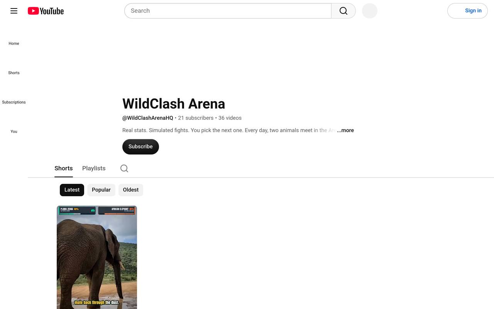

EXP-07
WildClash Arena
An automated YouTube Shorts factory: scripts, footage, edit, captions, sound, publish. I never touch it.
LIVE PIPELINE PROOF OF CONCEPT

BUILT
A pipeline that writes scripts, sources footage, cuts to the beat, adds captions and sound, and publishes two Shorts a day at 09:00 and 17:00. An episode bank and a factory service keep the queue ahead of the publish slots.
WHAT BROKE
The VM underneath it kept getting replaced, which killed episodes mid-render and wiped the systemd timers. One night the episode bank hit 0 of 3 and a publish slot was lost. Recovery is now a canonical reinstall script for the timers, and the bank refills ahead of schedule instead of just in time.
HOW I JUDGE IT
The factory heartbeat is the judge: every cycle writes a timestamped result, and a watchdog wakes me only when the heartbeat goes stale or the bank runs low. Comment checks run as a wake-only hook with a cheap model giving a logged second opinion; the deterministic gate stays in charge.
RESULTS
Two videos a day, produced and published without me.
FOR DAREK TO ANSWER
Channel numbers: subscribers and views when there is something to report.